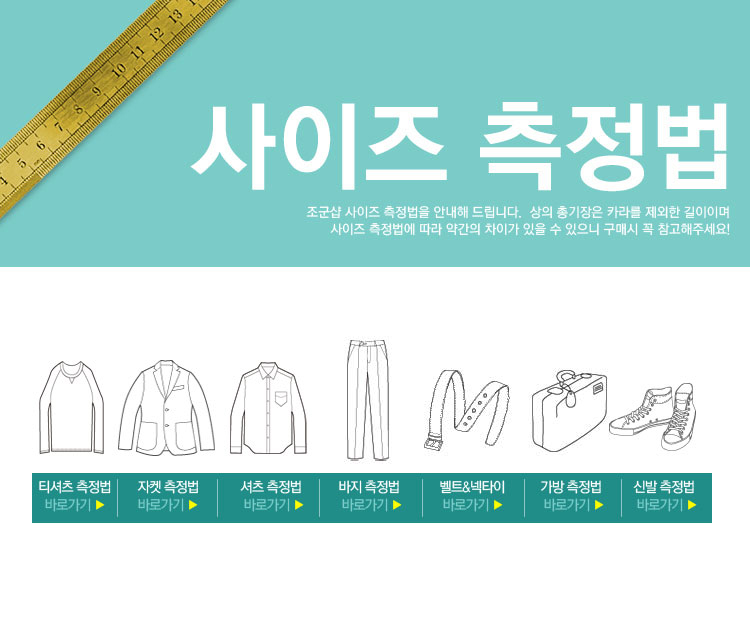

-
★ 상품관련 FAQ(공지사항)★
Q .모델분 사이즈가 어떻게 되요?
A .
고객님의 사이즈 고민을 덜어드리기 위하여 상품의 상세페이지 내에
모델분의 신체사이즈와 착용하신 사이즈를 기재해드리고있습니다 ^^
상세 페이지에서 확인가능함으로 꼭! 다시한번 확인해주시구요 ~
키와 몸무게가 비슷하시더라도, 체형에 따라 착용 사이즈는 달라질 수 있는
부분임으로 이점 유의하시어 확인부탁드릴께요 !!
Q .제 신체사이즈에는 어떤 사이즈가 맞을까요?
A .
우선 상품의 제조사/재질/종류 등에 따라 상품의 사이즈는 차이가있으므로
구매하시려는 사이즈마다 실측사이즈를 꼭! 확인해 주셔야합니다.
저희쪽에 사이즈를 문의해주셔도 키와 몸무게만으로는 체형을 정확하게
알 수없는 부분이라 담당자분께서 사이즈를 '추천' 드리는 부분임으로
실제 사이즈결정은 실측사이즈와 구매후기등을 꼭! 참고하시어 구매해주셔야
합니다!! 실측사이즈는 고객님의 신체 사이즈가아닌, 평소에 잘맞게 착용하시는
비슷한 종류/재질의 의류의 실측사이즈와 상세페이지에 기재된 실측사이즈를
비교해주시면 확인 가능하실꺼에요 ^^
*사이즈를 재는 방법은 하단 공지사항에 기재되어있음으로 확인부탁드릴께요!
Q .기재된 실측사이즈는 정확한건가요?
A .
아시다시피 의류의경우에는 옷을 펼쳐놓은 방법/재는 위치/ 각도/ 방향등에따라
실측사이즈 측정시 오차가 발생 할 수 있습니다 ㅠㅠ.. 이점양해부탁드릴께요..
오차범위는 1~2cm정도임으로 이점 유의하시어 신중한 구매부탁드릴께요
*만약 상품수령후, 실측사이즈 오차가 3cm이상 차이나신다면 이는
사이즈 오류일 수 있음으로, 저희쪽에 연락주시거나 게시판에 글을 남겨주시면
확인 후 처리방법을 안내드리도록하겠습니다 ^ ^
Q . 정확한 상품의 색상을 알고싶어요!
A .
모델 착용컷의경우 빛등의 영향으로 인하여 실제의 색상과는 차이가 발생할 수 있습니다.
착용컷의경우 상품의 코디이미지와 핏등을 참고하시는데에 확인해 주셔야하는 부분이며
상품의 디테일 또는 색상의경우에는 상세페이지 하단에있는 '상품상세 이미지컷'상으로
확인해주셔야만 정확한 색상 확인이 가능합니다 ^^
상세컷의 경우에도 사용하시는 모니터 화소나 색상조절등에 의하여 약간의 차이가
발생할 수있는점 양해부탁드리며 이로 인한 교환/반품은 불가합니다.
Q . 품절상품의 재입고 여부가 궁금합니다
A .
시즌이 지난상품이나, 오래전에 판매되던 상품은 재입고가 불가할 수 있습니다ㅠㅠ
그래도 조군은 고객님께서 원하시는 상품에대해서는 최대한 재입고가 가능하도록
노력하도록 하겠습니다^^.. 재입고의 여부는 상품게시판에 글 남겨주시면 확인 후 안내 도와드리겠습니다^^
업체측에서 아예생산이 중단된 상품의경우 재입고가 불가할 수 있으므로
이점양해부탁드릴께요 ㅠㅠ..
★상품관련문의 게시판은 상품에 관련된 문의를 남겨주시는 게시판입니다.
배송전 변경/ 취소/ 직거래 또는 배송등의 문의글은 해당 관련게시판에 남겨주시면
좀 더 빠르고 정확하게 답변 받으실 수 있습니다 ^ ^
-
★사이즈 측정법★


-
배송비는 얼마인가요?
Q. 배송비는 얼마인가요?
A. Y_shirt_S의 기본 배송비는 2,500원이며 (제주/ 도서산간지역 추가비용 발생)
7만원이상 결제시, 전국 지역상관없이 무료배송가능합니다.
7만원이상 구매로 무료배송을 혜택을 받으신후, 배송전 또는 배송후에 상품을 취소하시어
실 결제금액이 7만원 미만일 경우엔 택배비를 부담해주셔야합니다.
-
주문한 상품이 품절이라는데 어떻게 해야되나요?
Q. 주문한 상품이 품절이라는데 어떻게 해야되나요?
A. 주문하신 상품 품절로 인해 불편드리게 되어 정말 죄송합니다.ㅠㅠ
정상 구매가 가능하셨던 상품이 더라도 상품 준비과정 중
거래처 변동사항 등으로 인해 갑작스럽게 품절이 이루어 질 수 있으며
저희도 이를 미리 예상하기 어려운 부분입니다 ㅜ.ㅜ
확인되는대로 고객님께 최대한 빨리 연락을 취하여 조금이나마 불편을 덜어드리려
노력하고 있으니 너그러운 마음으로 양해부탁드리겠습니다.
품절상품은 다른상품으로 변경/적립금환불/초기결제수단으로의 환불 등이 가능하므로
원하시는 처리내용을 저희쪽 [배송전변경/취소/직거래]게시판 또는
콜센터[8520-8520]로 연락주시면 빠른처리 도와드리도록하겠습니다!
<상품변경>
다른상품으로 교환을 원하실경우에는 교환원하시는
상품명/색상/사이즈를 게시판에 남겨주시면 확인 후 처리해드리겠습니다.
<품절상품보상제>
품절상품에 한하여 적립금으로 환불을 원하실 경우, 상품금액의 5%를 추가로 적립해드리는
'품절상품 보상제' 가 운영되고 있습니다. 적립금으로 환불된 금액은 추후에 상품을 구매하실 때
구매금액과 적용금액에 제한없이 편리한 사용이 가능합니다.
-
배송기간이 얼마나 소요되나요?
Q. 배송기간이 얼마나 소요되나요?
A. 당일배송: 오후3시전까지 입금확인 완료시,당일출고 [오후3시주문상태:상품준비or배송준비]
일반배송: 결제일로부터 준비기간 2-7일 (최대기간 안내이며, 변동있을 경우 연락 드립니다)
※정상출고 이루어졌을 경우 오후 5시~6시 이후 주문서에서 운송장번호 확인이 가능합니다※
모든 고객님 한분 한분께 최대한 빠른배송이 이루어질 수 있도록
열심히 뛰고 있으니 조금만 기다려주세요 ♥
상품은 대한통운택배를 통해 발송되며 수령기간은 1~2일정도 소요됩니다.
( *상품이 준비되는 과정에서 갑작스런 업체측 변동사항으로 인하여
준비가 늦어지거나 품절이 되는 경우가 있습니다 ㅜ.ㅜ
이는 저희쪽에서도 미리 예상은할 수 없는 부분으로
확인되는된다면 고객님께 최대한 빠르게 연락드려 조금이나마 불편을 덜어드리려 노력하고있으니
너그러운 마음으로 양해부탁드리겠습니다.
또한 최대한 이러한 일이 발생하지않도록 최선을 다하겠습니다.)
임시품절 상품이나 수제화 등의 상품은
상품 준비기간이 일주일이상 소요될 수 있는 점 양해 부탁드립니다.
TIP!! 당일출고 여부를 확인할 수 있는 방법
- 오후 4시이후에 출고가능여부 문의주세요
(4시이전에는, 상품의 입고와 검품이 이루어지기 때문에 정확한 출고여부 확인이 어렵습니다)
- 오후 6~7시쯤 송장번호가 문자로 전송되는지 확인해주세요.
(정상출고가 이루어지면 전산 입력 후 6~7시쯤 출고완료 문자가 자동 전송되므로
따로 문의주시지않아도 확인이 가능합니다.)
-
당일배송 상품이 뭔가요 ?
Q.당일배송 상품이 뭔가요 ?
A.
당일배송상품은 오후3시이전까지 결제가 완료된 주문건에 한하여
해당 일자 오후에 출고가능하며, 빠르면, 다음날 정도에 수령가능하신 상품입니다^ ^
[당일배송]아이콘이 달린상품 중,<당일출고 가능>옵션을 확인 후 주문 해주세요 일반상품을 한주문건에 함께 주문하실 경우
일반배송 준비기간(2-7일)으로 적용됩니다
만일 당일배송 상품부터 부분출고를 원하신다면 주문 후저희 [배송관련]게시판
또는 콜센터나 카카오톡으로 연락주시면 확인 후 안내 드리겠습니다.
*이때, 간소한 시간차이로 결제확인이 될 경우 시스템상에서 인식하지 못하여 간혹 당일배송이 불가 할 수 있으므로
결제완료 후 연락 주시면 당일배송 상품을 분리하여 먼저 발송되도록 처리해드리겠습니다^^
※ 경우에 따라, 택배비 추가부담되실 수 있습니다. 자세한 문의는 고객센터 (8520-8520) 또는 카카오톡 문의 부탁드릴께요^^
-
아이디와 비밀번호가 기억나지 않아요.
Q. 아이디와 비밀번호가 기억나지 않아요.
A. 로그인 화면에서 아이디 찾기/비밀번호 찾기를 통해 확인 가능합니다.
아래 3가지 방법 중 하나로 진행해 주세요.
■ 휴대전화
회원 정보에 등록된 본인의 휴대전화 번호를 인증하는 방법입니다.
※ 단, 휴대전화 번호를 변경했다면 다른 방법을 이용해 주세요.
■ 이메일
회원 정보에 등록된 본인의 이메일 주소를 인증하는 방법입니다.
※ 단, 이메일이 유효하지 않으면 다른 방법을 이용해 주세요.
■ 본인인증
이용 중인 통신사와 휴대전화 번호를 인증하는 방법입니다.
※ 기존에 본인인증을 완료한 회원은 본인인증으로 찾기만 가능 합니다.
※ 비밀번호 재설정을 완료한 휴면 회원은 휴면 해제 및 탈퇴 신청한 회원은 신청이 취소됩니다.
-
회원 정보 수정은 어디서 하나요?
Q. 회원 정보 수정은 어디서 하나요?
A. 회원 정보 수정은 아래 경로로 직접 변경 가능합니다.
■ 회원 정보 수정
모바일(앱/웹) : 마이페이지 > 내 정보 관리 > 오른쪽 위 톱니바퀴
PC(웹) : 마이페이지 > 회원정보 변경
※ 원활한 주문 및 배송을 위해 회원 정보를 정확하게 기재해 주세요.
■ 이름 개명 시 수정
모바일(앱/웹) : 마이페이지 > 내 정보 관리 > 오른쪽 위 톱니바퀴 > 회원 정보 > 이름/휴대전화/생년월일
PC(웹) : 마이페이지 > 회원정보 변경 > 이름수정
※ 개명한 이름이 NICE 평가 정보에 등록되어 있어야 합니다.
※ 본인인증을 통해 NICE 평가 정보 적용된 이름(실명)을 기준으로 변경됩니다.
-
재고가 없어요. 언제쯤 구입할 수 있을까요?
Q. 재고가 없어요. 언제쯤 구입할 수 있을까요?
A. 품절 상품 재입고 여부 및 일정은 정확한 확인이 가능하지 않지만 재입고 알림을 등록하면 알림톡으로 확인 할 수 있습니다.
알림 신청 방법은 아래내용을 확인해 주세요.
■ 재입고 알림 신청
모바일(앱) : 상품 선택 > 구매하기 > 재입고 알림 받기 선택
※ 재입고 알림 신청은 APP에서만 신청이 가능합니다.
※ 재고 입고 수량에서 요청순서에 따라 순차적으로 발송 됩니다.
※ 재입고 알림 버튼이 보이지 않거나 재입고 관련 상세확인은 상품 페이지의 상품문의를 이용해 주세요.
-
반품접수는 어떻게 하나요?
Q.반품접수는 어떻게 하나요?
A.교환(환불) 접수 시 선택했던 방법으로 반품 접수해 주세요.
■ 회수해 주세요
무신사 자동회수 서비스로 택배기사가 요청한 회수지로 평일 기준 1일 ~ 3일 이내 방문합니다.
※ 방문 전 택배 기사분이 연락 후 방문 예정이며, 비대면으로 상품을 전달할 때는 반품 상자를 구분할 수 있도록 표시 후 회수 장소에 보관해 주세요.
■ 직접 발송했어요
상품을 받은 택배사와 같은 택배사로 반품 예약해 주세요.
상품 회수 후 반송장 정보를 입력해 주셔야 합니다.
※ 계약된 택배사가 아닌 다른 택배사 이용 시 추가 비용 발생할 수 있고 2개 이상의 브랜드 반송 시, 각각 반송지로 보내주세요.
※ 안내서에 배송비 동봉 등에 대한 내용이 있더라도, 동봉하면 안 됩니다.
-
같은 브랜드 다른 상품으로 교환 가능 한가요?
Q.같은 브랜드 다른 상품으로 교환 가능 한가요?
A.같은 브랜드 상품이라도 품번 및 상품이 다르면 교환이 가능하지 않습니다.
※ 동일한 상품명의 옵션으로만 교환 신청이 가능합니다.
※ 품절된 옵션이거나 추가 금액이 포함된 옵션은 교환이 가능하지 않습니다.
※ 회원님의 사유로 교환 진행중인 상품이 품절될 경우, 반품비가 발생될 수 있고 이를 제외한 결제 금액이 환불 처리됩니다.
※ 다른 상품으로 교환 희망 시 환불 후 재주문해 주세요.
-
상품을 받았는데 교환하고 싶어요.
Q.상품을 받았는데 교환하고 싶어요.
A.교환은 배송 완료 후 7일 이내일 경우에만 주문/배송/픽업 조회에서 접수 가능합니다.
■ 교환 접수 경로
모바일(앱/웹): 마이페이지 > 주문/배송/픽업 조회 > 교환 요청
PC(웹): 마이페이지 > 주문 내역 조회 > 교환 요청
1. 반품할 상품의 교환을 선택 해주세요.
2. 반품 방법을 선택해 주세요.
- 회수해 주세요 : 무신사 자동회수 서비스로 택배기사가 요청한 회수지로 평일 기준 1일 ~ 3일 이내 방문합니다.
- 직접 발송했어요 : 상품을 받은 택배사와 같은 택배사로 반품 예약해야 합니다.
※ 반송장 번호가 아직 없다면 반송장 정보는 '다음에 등록하기'를 선택해 주세요.
3. 환불 배송비를 선결제해야 합니다.
신용카드 또는 가상 계좌 결제만 가능합니다.
4. 상품은 받아본 그대로 포장해서 반품해 주셔야 합니다.
※ 회원님의 사유로 교환 진행중인 상품이 품절될 경우, 반품비가 발생될 수 있고 이를 제외한 결제 금액이 환불 처리됩니다.
※ [교환처리가 어려운 경우 FAQ]를 꼭 확인해 주세요.
-
상품이 불량인 것을 착용하고나서 확인했어요 어떻게 하나요?
Q.상품이 불량인 것을 착용하고나서 확인했어요 어떻게 하나요?
A.착용 후 불량 확인 시에는 초기 불량 여부 확인이 어려워 교환 및 환불이 가능하지 않습니다.
* 브랜드 측으로 AS 가능 여부 확인 후 AS 처리 진행이 가능합니다.
* 미 착용 상태에서 불량 확인 시, 무상으로 환불 및 교환 처리가 가능합니다.
-
실제 카드 취소나 금액은 언제 입금되나요?
Q.실제 카드 취소나 금액은 언제 입금되나요?
A.결제했던 수단으로 환불되고 각 결제 수단마다 기간이 다릅니다.
아래 결제수단별 환불 기간을 확인해 주세요.
■ 카드
환불 완료 후 평일 기준 1일 ~ 3일 이내 취소됩니다.
해외 비자 카드의 경우 부분 취소가 가능하지 않습니다.
■ 가상 계좌
환불 완료 후 평일 기준 1일 ~ 2일 이내 입금됩니다.
정상 계좌 확인을 위해 인증 후 환불 신청이 가능합니다.
■ 휴대전화 소액결제
휴대전화 결제 수수료를 포함해 휴대전화 결제 내역이 취소됩니다.
결제월과 환불월이 다르거나 부분 취소 시 계좌로 환불됩니다.
■ 토스, 페이코, 카카오 페이, 네이버 페이, 차이 페이 등
환불 완료 후 평일 기준 1일 ~ 2일 이내 연계된 카드는 취소, 계좌는 입금으로 처리 됩니다.
-
주문을 취소(옵션변경)를 하고 싶어요.
Q.주문을 취소(옵션변경)를 하고 싶어요.
A.주문 후 입금 확인 단계라면 마이페이지 > 주문/배송/픽업 조회에서 주문을 취소할 수 있습니다.
신청 즉시 주문 취소되고 사용한 적립금과 쿠폰은 유효기간이 남아 있는 경우 반환되어 재사용 가능합니다.
입금하지 않은 주문의 옵션 변경을 원하는 경우 주문 취소 후 재주문해 주세요.
※ 입금예정 상태로 재고를 보류해두는 것을 반복할 경우, 안내 없이 무신사 스토어 이용이 영구 제한될 수 있습니다.
※ 가상 계좌 결제는 2일 이내 입금하지 않을 경우 주문은 자동으로 취소됩니다.
※ 출고 처리 중 부터는 주소(옵션) 변경 및 취소가 가능하지 않아 상품 받아본 후 교환 또는 환불로 신청해 주셔야 합니다.